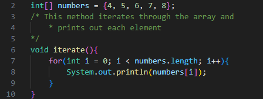
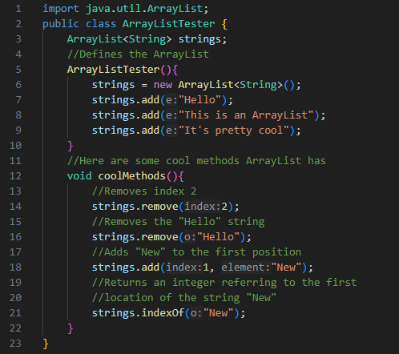

Arrays are a great way to store a large amount of related information. Arrays can
store both primitive datatypes and also object references.
Each array is created with a length, which is the number of individual variables, called
elements, the array can store.
Arrays can also be created with an array literal, which is a comma separated list of values
enclosed in braces.
A real life example of an array would be a bookshelf, with each spot on the bookshelf storing a different book.
Array elements can be accessed by specifying the index of the array.
Be careful when using an array, however, as array indices begin at 0 and end at array length - 1. If you call an index outside of these boundaries, you will get an error.
ArrayLists are very much like arrays in how they function. However, ArrayList is a class and you need to create an object to use it. The major difference between ArrayLists and arrays is that an ArrayList has no set size. This has its upsides and downsides, as sometimes an ArrayList takes up much more memory than it needs. You also cannot control the length of an ArrayList.
As for the upsides, ArrayLists have several very useful features, that arrays do not have, through its methods.
To use ArrayList, you must import the class from the java.util package.
A common mistake when removing elements from an ArrayList using iteration is incrementing the index immediately after removing an element. Removing an element from an ArrayList shuffles all subsequent elements down one index, so the next element after removing an element would be on the same index.